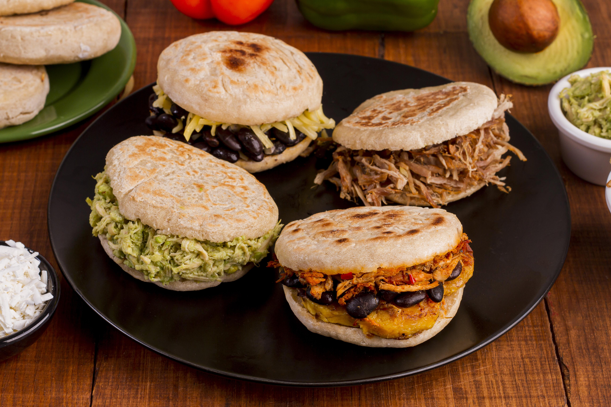

Home
Arepa

Designed by Freepik
Delicious arepa made of precooked white cornmeal, shredded beef, white soft cheese, butter, and ham
This recipe consists of the traditional Venezuelan plate called the arepa. It is made based off Harina P.A.N (precooked white cornmeal), salt, and water
Ingredients:
- 2 cups precooked white cornmeal (Harina P.A.N. is the traditional brand)
- 2 ½ cups warm water
- 1 tsp salt
- 1 tbsp oil (vegetable or corn oil, optional, for a softer dough)
- Shredded beef (prepared as carne mechada, usually stewed with onion, bell pepper, garlic, tomato, and spices)
- Soft white cheese (queso blanco or queso de mano; mozzarella can be used if unavailable)
- Ham slices
- Butter (for spreading inside the hot arepa)
Steps:
- In a large bowl, add the warm water and dissolve the salt. Slowly add the precooked cornmeal while stirring with your hands or a spoon to avoid lumps. Knead gently until you get a smooth, pliable dough that doesn't stick to your hands. Let it rest for 3–5 minutes.
- Divide the dough into 6-8 equal portions. Roll each portion into a ball, then flatten into a disk about ½ - ¾ inch thick.
- Heat a lightly oiled skillet (griddle) over medium heat. Place the arepas and cook for about 5-7 minutes per side, until a golden crust forms. Transfer to a preheated oven at 375°F (190°C) for 10–15 minutes to finish cooking (they should sound hollow when tapped).
- Slice open each hot arepa halfway to form a pocket. Spread a bit of butter inside. Fill generously with shredded beef. Add slices of ham and a good portion of soft white cheese. Serve immediately while warm.